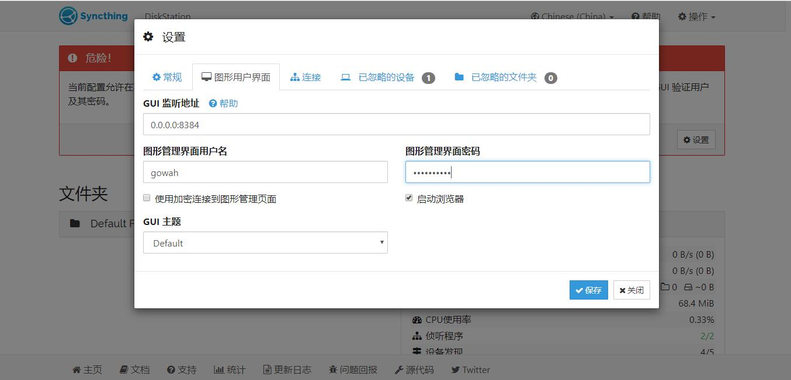

简介 Syncthing 是一个开源免费的数据同步神器，被称为 Resilio Sync 的替代品，支持 Android、Linux、Windows、Mac O…
简介
Syncthing 是一个开源免费的数据同步神器，被称为 Resilio Sync 的替代品，支持 Android、Linux、Windows、Mac OS X 等系统，可以使我们在 2 台任何系统任何设备之间，实现文件实时同步，很强大。而且数据很安全，不会存储在你的设备以外的其他地方。所有通信都使用 TLS 进行保护。所使用的加密包括完美的前向保密，以防止窃听者获得对您的数据的访问权限。很适合我们用来搭建私有同步网盘。
安装
本文只做 Linux VPS 服务器与 Windows 电脑之间的同步安装及演示操作。Syncthing 官网：点击进入，软件自行下载最新版本即可。
1、VPS 安装 Syncthing
安装 Syncthing：
#目前最新版v1.2.0，日后自行修改版本号
wget https://github.com/syncthing/syncthing/releases/download/v1.2.0/syncthing-linux-amd64-v1.2.0.tar.gz
tar xzvf syncthing-linux-amd64-v1.2.0.tar.gz
cp syncthing-linux-amd64-v1.2.0/syncthing /usr/local/bin
开放端口
Syncthing 默认监听以下几个端口
22000 (TCP)
8384 (TCP)
21027 (UDP)
44647 (UDP)
37269 (UDP)
这里我是个人使用，所以只开放 22000 (TCP) 与 8384 (TCP)
端口说明:
8384 是Web访问控制端口
22000 是节点访问端口
开启 Syncthing：
syncthing
第一次启动会生成配置，然后给的内网地址我们是进不去的，这时候需要修改成外网地址才行（没有外网地址？ -> LanProxy 端口映射了解一下），先使用 Ctrl+C 退出。然后编辑 /root/.config/syncthing/config.xml 文件，将 127.0.0.1:8384 改成 0.0.0.0:8384 即可，可以直接使用命令：
sed -i 's/127.0.0.1/0.0.0.0/g' '/root/.config/syncthing/config.xml'
再次启动 Syncthing：
syncthing
然后在浏览器访问 http://IP:8384，就可以进入 Syncthing 界面，如果打不开请自行开放 8384 端口。
# 例如放行8384端口，防火墙设置
/sbin/iptables -I INPUT -p tcp --dport 8384 -j ACCEPT
/etc/init.d/iptables save
service iptables restart
然后我们点设置，填好管理用户、密码及其它参数再重启 Syncthing 即可。

如果不需要 p2p 进行分享，也就是不需要进行中转，那么可以将启用 NAT遍历 和 全球发现 进行关闭。但是在服务端与客户端之间，有一方的 ip 必须是公网。
2、Windows 安装 Syncthing
Win 系统安装 Syncthing 是非常简单的，直接从官方网站下载对应版本的 Syncthing 程序，解压打开 syncthing.exe，然后会弹出一个窗口，浏览器再打开 http://127.0.0.1:8384 就可以进入并使用 Syncthing 了，默认文件夹路径为 C:\Users\Administrator\Sync。
使用
首先打开其中一个设备的 Syncthing 界面，并点击右上角操作 - 显示ID 获取设备 ID。再到另一个设备的 Syncthing 界面，点击右下角添加远程设备，输入需要同步的设备 ID 和共享的文件夹。看个人需求决定是否要进行高级配置 (选填)，如果是私人用，不想加入公共的节点，那么就点击高级 找到 地址列表 将 dynamic 填写为 tcp://服务器ip:22000（防火墙记得放行 22000 端口）

这时候另一台设备会弹出一个窗口，点击添加设备即可。
此时设备添加完成，就可以开始同步文件夹了，也可以在其中一台设备新建 / 添加其它文件夹
进行必要的文件共享设置
然后同样的，另一台设备也会弹出一个窗口，点击同意添加即可。
最后等待片刻，所添加的文件夹都会自动同步完成。
如果希望 Syncthing 在后台运行可以使用 nohup 命令来实现：
nohup syncthing &> /dev/null &
更多功能请自行摸索，注意设备删掉 Syncthing 后，同步的文件夹依然存在。
开机启动
此方法适用于任何发行版（Arch，Debian，Linux Mint，Ubuntu，openSUSE）, 关于 windows 和 macOS 系统设置开机启动的方法，详见 -> 官方文档
Debian/Ubuntu
设置系统服务创建开机启动，此方法适用于 Debian9+/Ubuntu16.04+
#从源包内复制
cp syncthing-linux-amd64-v1.2.0/etc/linux-systemd/system/syncthing@.service /etc/systemd/system/
#设置以root用户执行，如有需要请自行修改，前提是必须是系统用户
mv /etc/systemd/system/syncthing@.service /etc/systemd/system/syncthing@root.service
使用命令：
#添加开机启动
systemctl enable syncthing@root.service
#启动syncthing服务
systemctl start syncthing@root.service
CentOS6/7
需要注意的是，Centos7 下请使用原 syncthing 包内 etc 文件夹中的 linux-systemd 或者 linux-upstart 作为启动脚本，Centos6 我建议使用 supervisor 作为运行控制：
安装 Supervisor
yum install python-setuptools -y
easy_install supervisor
echo_supervisord_conf > /etc/supervisord.conf
echo "supervisord" >> /etc/rc.local //开机启动supervisor
在 /etc/supervisord.conf 最后添加如下内容，然后启动 (运行 supervisord) 或者重启 supervisor (supervisorctl reload)
[program:syncthing]
command=/usr/local/bin/syncthing
autostart=true
autorestart=true
user=root
redirect_stderr=true
stdout_logfile=/var/log/syncthing.log